เป็น Platform ที่รวบรวมเครื่องมือต่าง ๆ สำหรับการจัดการในส่วนของ Backend หรือ Server side ซึ่งทำให้สามารถ Build Mobile Application ได้อย่างมีประสิทธิภาพ และยังลดเวลาและค่าใช้จ่ายของการทำ Server side หรือการวิเคราะห์ข้อมูลให้อีกด้วย โดยมีทั้งเครื่องมือที่ฟรี และเครื่องมีที่มีค่าใช้จ่าย
คือ บริการฐานข้อมูล NoSQL ใช้วิธีการเก็บข้อมูลเป็น JSON Tree ขนาดใหญ่ และสามารถ Sync สถานะข้าม Client ได้แบบ Realtime กล่าวคือ หากเชื่อมต่อ Database เดียวกัน 2 ที่ เมื่อใดที่ที่นึงมีการอัพเดตข้อมูล อีกที่นึงก็จะมีการอัพเดตข้อมูลให้เหมือนกันโดยอัตโนมัติ และสามารถทำงานแบบ Offline ได้บนแอป Android และ iO
ในการเริ่มใช้งาน Realtime Database นั้นไม่ยุ่งยากอย่างที่คิดเพียงแค่เรามี Account ของ Google ก็สามารถมารถใช้งานได้เลย
โดยขั้นแรกให้เข้าไปที่เว็บไซต์ Firebase
เข้าสู่เว็บไซต์ Firebase 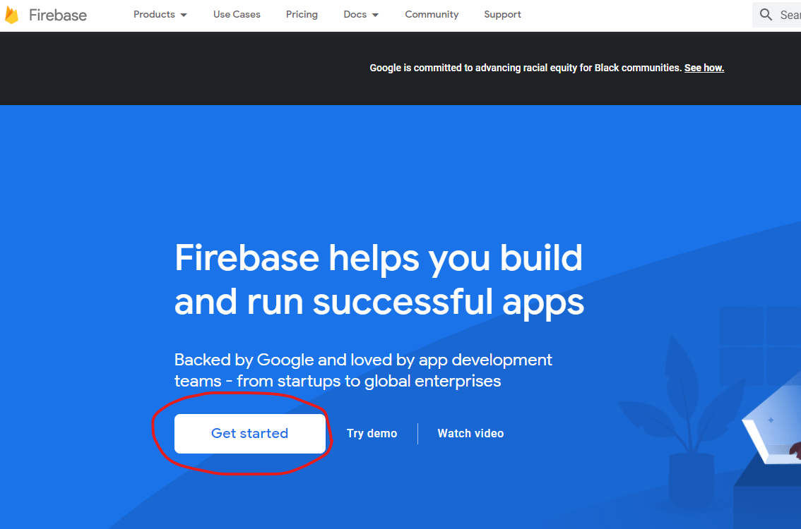ให้เข้าไปที่ Get started จากนั้นก็ Add Project เพื่อสร้าง Project ของ Firebase
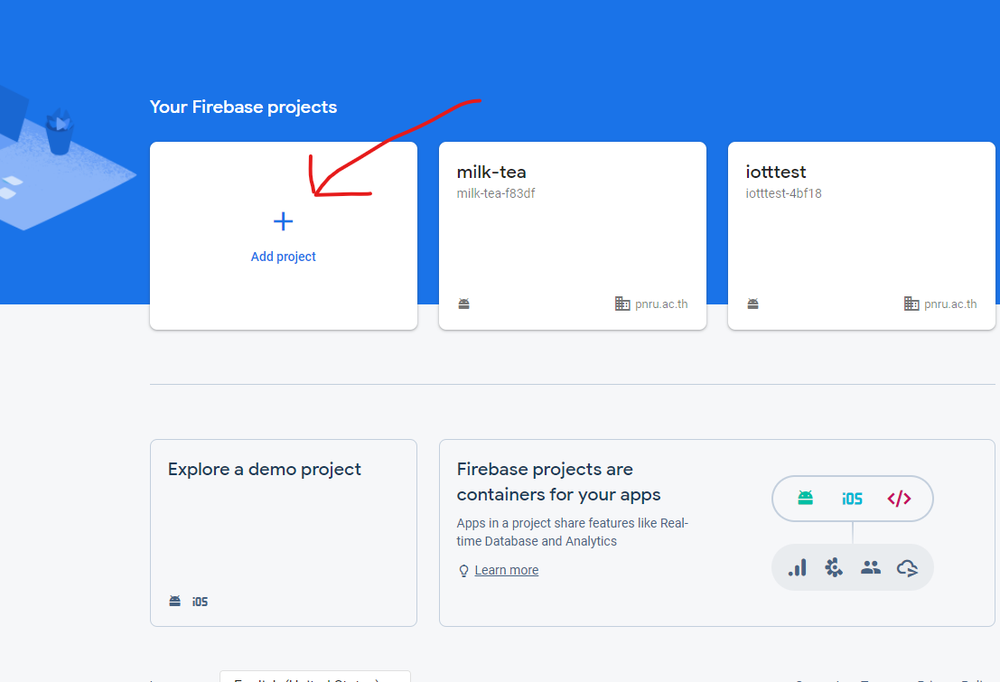ตั้งชื่อโปรเจค
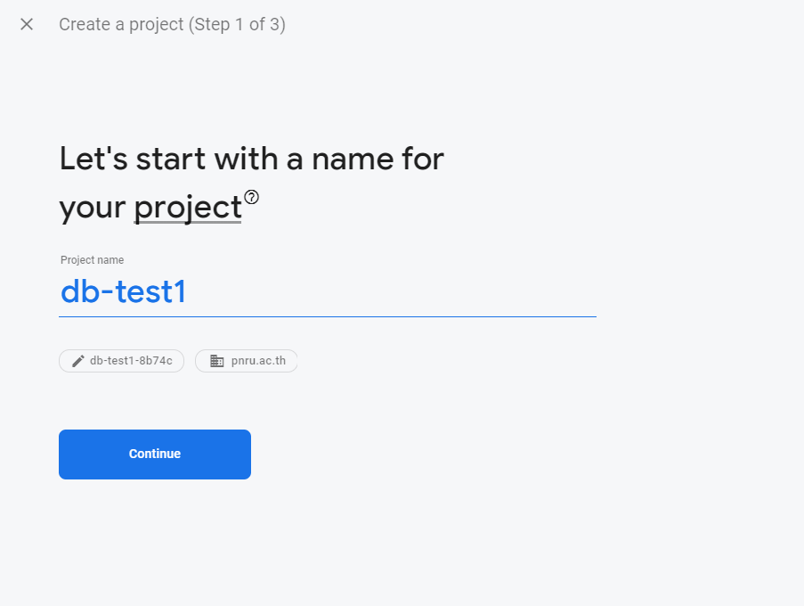สำหรับคนที่ยังไม่เคยใช้งาน ให้สร้าง Account Firebase
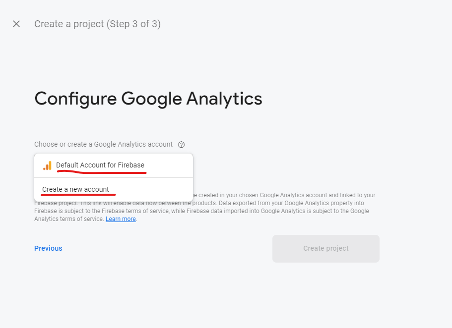จากนั้นให้เพิ่มแอปตามแพลตฟอร์มที่เราสร้าง ผมสร้างเป็นแอป Android ก็จะเลือก Android นะครับ
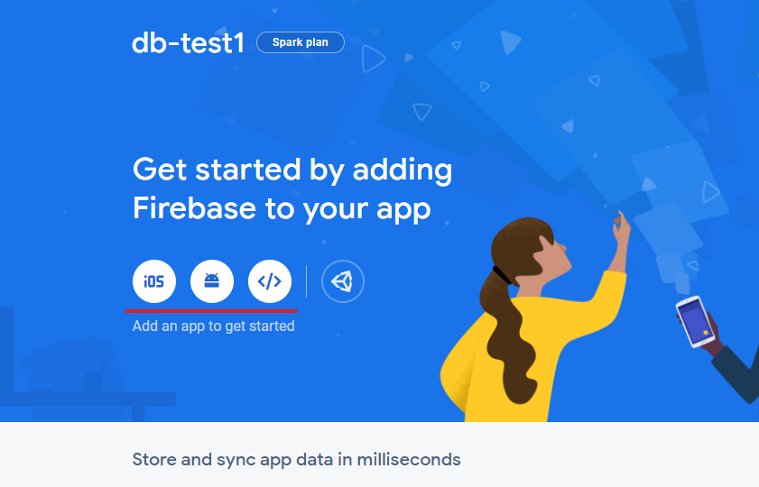จากนั้นให้ไปที่โปรเจคของเราไปที่ไฟล์ android>app>build.gradle copy applicationId
จากนั้นนำไปใส่ใน Android package name แล้วลงทะเบียนแอป
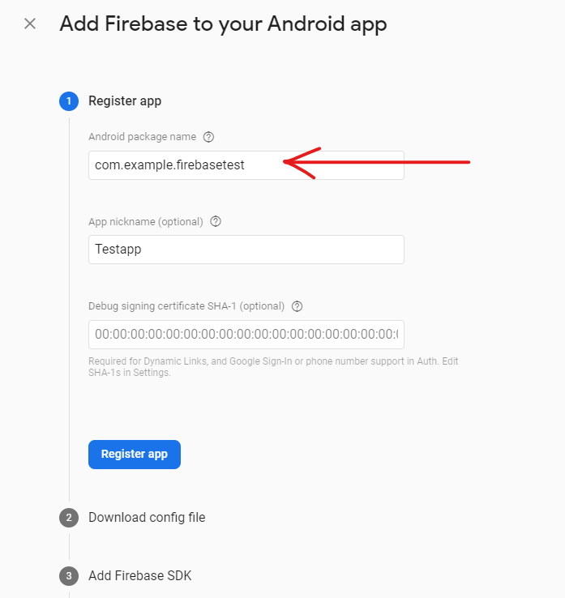ดาวน์โหลดไฟล์ json มาไว้ที่ไฟล์ android>app ของโปรเจคเรา
copy โค้ด classpath 'com.google.gms:google-services:4.3.5' ไปวางไว้ที่ไฟล์ build.gradle ระดับโปรเจค ในส่วนของ dependencies {}
copy โค้ดไว้ในไฟล์ build.gradle ระดับแอป ทั้งโค้ด plugin และ dependencies แต่ถ้าอันไหนมีอยู่แล้วก็ไม่จำเป็นต้องใส่เพิ่มนะ
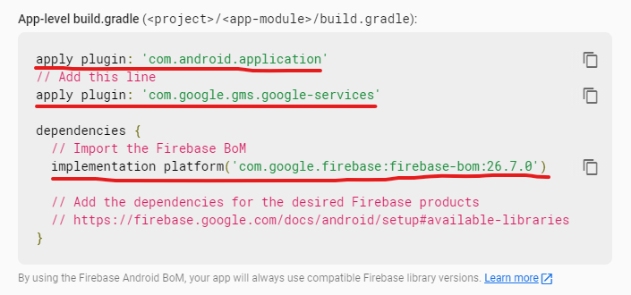เท่านีแอปเราก็สามารถเชื่อมต่อกับ Firebase แล้วครับสามารถเล่นกับระบบนี้ได้หลายแบบเลย แต่วันนี้เราจะใช้ Realtime Database นะ
แต่ถ้าใช้งานในทันทีเราอาจจะเจอ error เนื่องจากติด Security Rules ใน Firebase ให้แก้ไขกฏโดยเข้าไปที่ Realtime Database
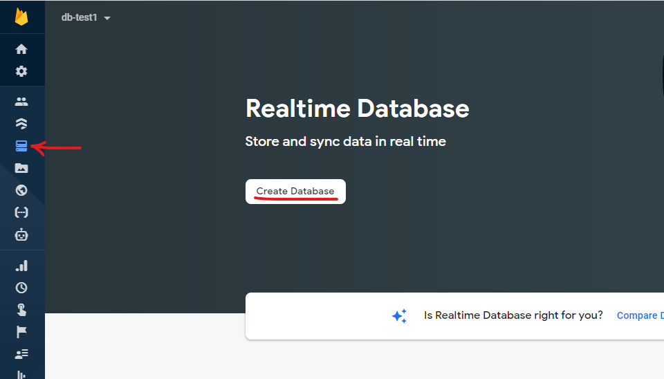เลือก Security rules เป็น test mode นะครับเพราะเราเพิ่งเริ่มใช้
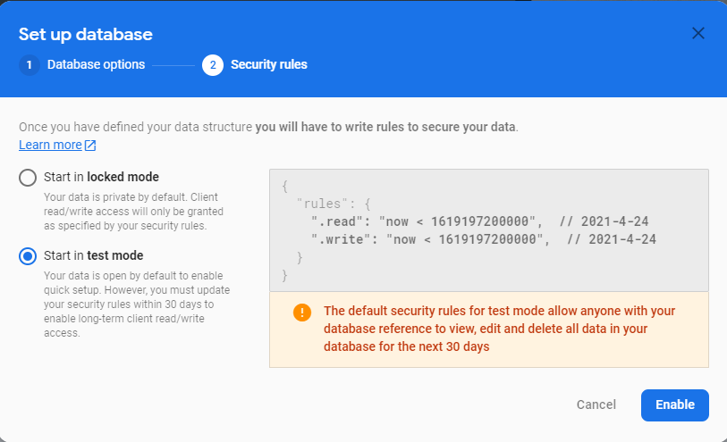จากนั้นให้ไปที่ Rules แล้วตั้ง "read":true, "write":true,
นอกจากนี้ยังมีวิธีการตั้งกฏของ Firebase แบบต่างๆ สามารถศึกษาเพิ่มเติมได้
สามารถติดตั้ง package firebase_database ลงในโปรเจคของเราเพื่อใช้งาน Realtime Database
สำหรับใครที่ยังไม่ทราบวิธีการใช้งาน Package ใน Flutter ให้ศึกษาวิธีการใช้งานก่อนนะครับ
หลังจากนำเข้า package เรียบร้อยแล้วมาดูที่การใช้งานกันดีกว่า สำหรับคำสั่งของ firebase นี้จะไม่ยุ่งยาก หลักๆที่เราจะลองทำคือ สร้าง อ่าน อัพเดต และลบ เรียกใช้ง่ายๆด้วยคำสั่ง FirebaseDatabase.instance.reference()
ในการสร้างข้อมูลเราจะใช้คำสั่ง .set() และเนื่องจากการเก็บ ข้อมูลแบบ NoSQL ของ Realtime Database ที่เก็บข้้อมูลในลักษณะแผนภูมิต้นไม้ ที่สามารถบันทึกเป็นข้อมูลชุดย่อยๆซ้อนกันได้ จึงระบุด้วยคำสั่ง .child()
ยกตัวอย่าง เช่น ในกรณีที่ต้องการสร้างข้อมูลของ user01 ที่ใน user01 มี Login ใน Login มี name ที่บันทึกชื่อ และ pass ที่บันทึกรหัส จะสมารถสร้างโค้ดได้ดังนี้
FirebaseDatabase.instance.reference().child('user01').child('Login').set({
'name':'noobmaster69','pass':'a123'
});ในโค้ดส่วนนี้สามารถนำไปใส่ไว้ในฟังก์ชันแล้วเรียกใช้ หรือใส่ไว้ในการเรียกใช้เลยก็ได้ หลังจาก Run แล้วใช้งานก็จะได้ผลลัพธ์แบบนี้
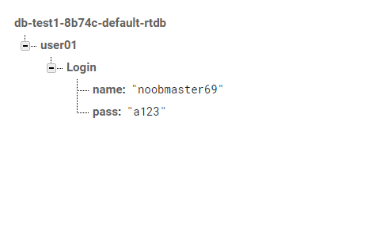หากใส่ตัวเลขจำนวนเต็ม หรือ ทศนิยม Firebase จะจัดเก็บเป็น int หรือ double และถ้าใส่เป็น true/false จะจัดเก็บเป็น Boolean แบบอัตโนมัต
ในการอัพเดทข้อมูลเราจะใช้คำสั่ง .update() เช่น หากต้องการเพิ่ม email และ phone ใน Login ของ user01 จะสร้างคำสั่งดังนี้
FirebaseDatabase.instance.reference().child('user01').child('Login').update({
'Email':'noobmaster69@gmail.com','phone':'0912345678'
});
ข้อสังเกต หากตัวเลขไม่ใส่เครื่องหมาย ' ' ข้อมูลจะถูกจัดเก็บเป็นรูปแบบ int และเลข 0 ที่อยู่หน้าสุดจะหายไป
หลังจากใช้งานจะได้ผลลัพธ์ดังนี้
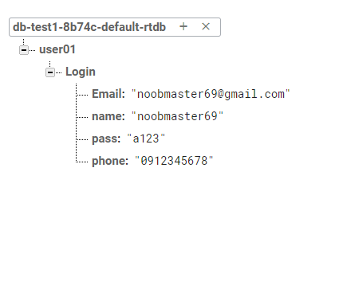update() สามารถใช้สร้างข้อมูลแทน set() ได้เลย แต่ข้อแตกต่างของ 2 คำสั่งนี้ คือ หากเราใช้คำสั่งสร้างข้อมูลในการเพิ่ม Email และ phone ข้อมูลเดิมที่เป็น name และ pass จะหายไป
การลบข้อมูลจะใช้คำสั่ง .remove() ซึ่งต้องการลบข้อมูลในส่วนไหน ให้ระบุตำแหน่งไปที่ส่วนนั้น เช่น การลบ phone
FirebaseDatabase.instance.reference().child('user01').child('Login').child('phone').remove();
หรือจะลบ user01 ทั้งหมด
FirebaseDatabase.instance.reference().child('user01').remove();
การอ่านข้อมูล แบบเฉพาะตำแหน่งจะใช้คำสั่ง .once().then() สามารถระตำแหน่งข้อมูลด้วย child() หรือใน snapshotvalue ก็ได้
FirebaseDatabase.instance.reference().child('user01').once().then((DataSnapshot datasnapshot){
String Rd=datasnapshot.value['Login']['phone'];
print('Phone Number: $Rd');
});
เมื่ออ่านข้อมูลจะได้ผลลัพธ์แบบนี้
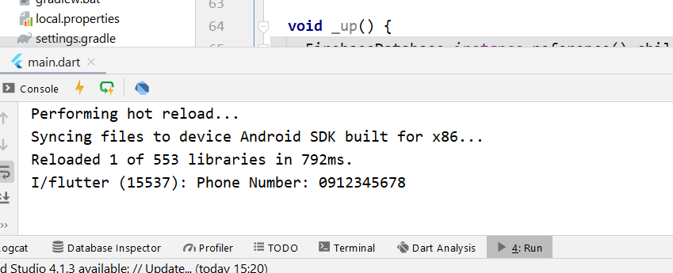นอกจากนี้ยังสามารถใช้งานร่วมกับ Widget Streambuilder() ได้ด้วยคำสั่ง .onValue
StreamBuilder(
stream: FirebaseDatabase.instance.reference().onValue,
builder: (BuildContext context, AsyncSnapshot snapshot) {
return ...
},
)